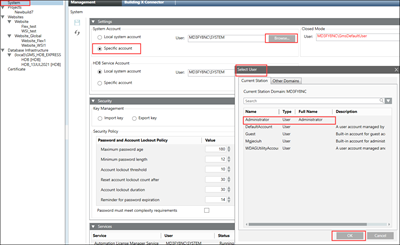

Cannot Start Bacnet Driver on Fresh Installation
Problem
During fresh installation, you are unable to configure or add a BACnet Driver, as the Pmon user account is set to an account without administrator privileges.
Solution
- Exit all the running clients.
- Launch System Management Console and stop the project.
- Select System node.
- In Settings expander, select Specific Account radio button.
- Click Browse.
- Displays the Select User dialogue box.
- Select any account having administrator privileges from either Current Station or Other Domains.
- Click OK. Enter the password for the account and click Save.

- Select Project node and navigate to active project.
- Select Edit.
- select Save.
- (Optional) You might need to enter password for the admin account that was selected in System node.
- Start the project.
- Launch Desigo CC client.
- Add the BACnet driver.
- Once the BACnet driver is added successfully, repeat the steps 1 - 5 again.
- Select the Pmon user account which was initially configured (account without administrator privileges)